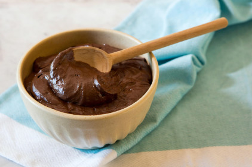

Mousse de Cacau
Ingredientes
- 1 xícara de leite de coco
- 3 colheres de sopa de semente de chia
- 2 colheres de sopa de cacau em pó
- 2 colheres de sopa de açúcar mascavo
Modo de Preparo
- Bata todos os ingredientes no liquidificador até a mistura ficar homogênea.
- Transfira a um recipiente e leve para geladeira por 2 horas, e depois sirva-se!